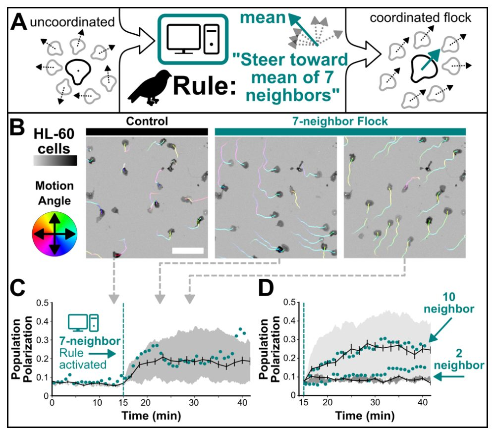
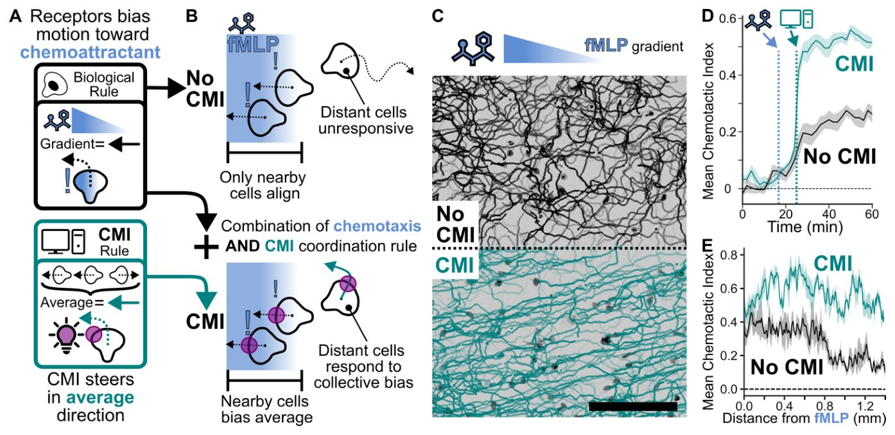

Клетки научили летать стаей с помощью световых алгоритмов

Как птицы синхронно маневрируют в небе, а муравьи безошибочно находят дорогу к пище? Биологи давно пытаются понять, по каким простым правилам разрозненные живые единицы собираются в единое целое. Исследователи создали систему управления, где видеокамера следит за поведением клеток, а алгоритм тут же корректирует их курс вспышками света. В итоге обычные лейкоциты, которые в норме ползают сами по себе, начали слаженно кружить стаями и сообща находить слабые химические сигналы.
Главное
- Интерфейс CMI связал компьютерное зрение и опто-PI3K для управления движением клеток в реальном времени
- Лейкоциты линии HL-60 заставили координироваться по правилам птичьих стай с выравниванием по соседям
- Коллективное выравнивание повысило эффективность хемотаксиса к пептиду fMLP более чем в два раза
Подробнее
В синтетической биологии проверка гипотез о коллективном поведении долгое время упиралась в длительный цикл генной инженерии: чтобы изменить правила межклеточного взаимодействия, требовались месяцы на сборку новых молекулярных контуров. Авторы работы обошли это ограничение, создав замкнутый интерфейс «клетка-машина» (cell-machine interface, CMI) на базе оптогенетики и компьютерного зрения. В культуре нейтрофилоподобных клеток линии HL-60 экспрессировали светочувствительный фермент фосфоинозитид-3-киназу (opto-PI3K), который управляет сборкой актинового цитоскелета и задает направление движения клетки при локальном облучении светом.
Программный алгоритм в реальном времени считывал траектории всех клеток и рассчитывал вектор светового воздействия согласно математическим правилам роения. Реализовав классический закон ориентации на семь ближайших соседей, заимствованный из динамики птичьих стай, авторы добились спонтанной синхронизации движения лейкоцитов и устойчивой поляризации популяции. При проверке коллективного хемотаксиса к градиенту формил-пептида (fMLP), полученного фотоактивацией защищенного аналога, передача усредненного вектора движения увеличила хемотактический индекс популяции более чем в два раза по сравнению с контрольной группой.
Ограничения
Эксперименты проведены на клеточной линии HL-60 in vitro в микрофлюидных камерах, а сам препринт на bioRxiv еще не прошел этап независимого рецензирования.
Подробный разбор статьи
Резюме
Коллективное движение, наблюдаемое у птиц и насекомых, позволяет группам решать задачи, недоступные отдельным особям. Эти формы поведения возникают благодаря локальным взаимодействиям, однако правила, организующие подобные процессы на клеточном уровне, изучены недостаточно из-за сложности экспериментального контроля. В данной работе авторы создали интерфейс «клетка-машина», позволяющий задавать правила коллективной миграции в режиме реального времени.
Пояснение
Интерфейс «клетка-машина» — это система, объединяющая компьютерное зрение и оптогенетику (управление активностью клеток с помощью света) для изменения поведения живых клеток в замкнутом контуре.
Исследователи использовали одну генетически модифицированную клеточную линию, в которой правила взаимодействия между клетками задавались программно и реализовывались через оптогенетическое управление с обратной связью. Это позволило клеткам самоорганизовываться в стаи, распространять сигналы регенерации, имитирующие логику взаимодействия роя иммунных клеток, и коллективно преодолевать градиенты сигнальных молекул, которые не способны распознать одиночные клетки.
Важно
Изменение простых правил взаимодействия между клетками позволяет создавать новые коллективные способности, недоступные отдельным элементам системы.
Работа демонстрирует, что модификация базовых принципов взаимодействия достаточна для возникновения сложных групповых функций. Предложенный подход создает экспериментальную базу для изучения принципов координации многоклеточных систем и проектирования синтетических коллективов с заданными свойствами.
Осторожно
Исследование проводилось на клеточных линиях in vitro; результаты демонстрируют принципиальную возможность управления поведением, но не могут быть напрямую перенесены на сложные организмы без дополнительных проверок.
Введение
Коллективная миграция и синтетическая биология
Коллективная миграция позволяет группам организмов и клеток решать задачи, недоступные индивидам. Примеры включают синхронное движение птиц для защиты от хищников, прокладывание феромонных троп муравьями, а также миграцию иммунных клеток и заживление ран. Исследования, основанные на наблюдениях, воздействии на сигнальные пути и математическом моделировании, показывают, что локальные взаимодействия между особями формируют масштабное коллективное поведение. Однако общие принципы этих систем остаются неясными из-за различий в пространственно-временных масштабах и способах коммуникации. Авторы предлагают новый подход: синтетическое перепрограммирование правил взаимодействия клеток.
Важно
Авторы разработали метод синтетического управления коллективной миграцией клеток, заменяя биологические сигналы программным обеспечением, что позволяет быстро менять логику взаимодействия без генетической перестройки клеток.
Синтетическая биология позволяет проверять понимание логики биологических систем через их создание «с нуля». Ранее этот подход применялся для изучения биологических осцилляторов, переходов между состояниями клеток и формирования паттернов. Авторы стремились сделать коллективную миграцию программируемой, переписывая правила взаимодействия «клетка-клетка». Традиционные методы требуют создания новых генетических конструкций для каждого эксперимента, что занимает месяцы. Новый подход использует оптогенетическое управление с обратной связью, где правила «вход-выход» кодируются программно, что сокращает время между итерациями до минут.
Пояснение
Оптогенетика — метод управления активностью клеток с помощью света, где светочувствительные белки активируют или подавляют специфические клеточные процессы.
Архитектура системы управления (CMI)
Для переписывания правил взаимодействия авторы создали систему CMI (Cell-Machine Interface), состоящую из трех компонентов: считывание состояния клетки (компьютерное зрение), управление поведением (субклеточная оптогенетика) и замкнутый контур обратной связи (Рис. 1A). Система связывает прошлые действия клеток с будущей оптогенетической стимуляцией согласно заданному алгоритму (Рис. 1B). В качестве исполнительного механизма использовалась оптогенетическая активация фосфоинозитид-3-киназы (opto-PI3K) (Рис. 1C, Рис. SN 1).
Осторожно
Исследование выполнено на клеточных моделях; перенос принципов управления на сложные организмы требует дополнительных проверок.
Система CMI позволила клеткам демонстрировать поведение, характерное для птичьих стай (Рис. 2, Рис. SN 2–4), совместно решать навигационные задачи (Рис. 3, Рис. SN 5) и роиться подобно нейтрофилам (Рис. 4, Рис. SN 6–7). Первым тестом стало программирование столкновения двух клеток. Правило, направляющее клетки перпендикулярно движению соседа, привело к тому, что клетки адаптировали скорость и траекторию друг к другу (Рис. 1D, Рис. SN 1). Это доказывает, что коллективное поведение может возникать из локальных правил, реализованных через компьютерный интерфейс, создавая взаимную связь между поведением клеток и алгоритмом управления.


Полное описание рисунка
Рисунок 2: Правила стайного поведения птиц определяют коллективную самоорганизацию мигрирующих клеток. Мы попытались перепрограммировать живые клетки для взаимодействия на основе классических правил стайного поведения птиц. A) Считается, что стайное поведение птиц возникает, когда особи синхронизируют свое движение с семью ближайшими соседями. B) Применение этого правила с помощью CMI привело к тому, что обычно нескоординированные HL-60 клетки, подобные нейтрофилам (слева), самоорганизовались в стаи (в центре, справа). C) Средняя поляризация симулированных (черная линия) и экспериментальных (голубые точки) популяций во времени до (слева от пунктирной линии) и после активации правила CMI для стаи из 7 соседей. D) В симуляциях стайного поведения птиц количество соседей, по которым каждая особь усредняет свое движение, является ключевым параметром, управляющим коллективным поведением. Этот параметр трудно манипулировать у живых птиц, но его можно быстро и точно изменять в живых клетках с помощью CMI, что приводит к ожидаемым количественным изменениям поляризации. В панели B сегменты треков окрашены в зависимости от угла движения, масштабная линейка — 100 мкм, все изображения в одном масштабе. Серые стрелки указывают на соответствующие моменты времени в панели C. Погрешности в C представляют собой стандартную ошибку среднего (SEM) общей поляризации по результатам симуляций, заштрихованная область — симуляция +/- одно стандартное отклонение параметра угловой скорости (см. детали методов).


Полное описание рисунка
Рисунок 3: Глобальная координация улучшает коллективное хемотаксическое наведение. Далее мы исследовали, позволяет ли координация клеточным коллективам решать реальные биологические задачи. A) Клетки HL-60 чувствуют хемотаксические градиенты и реагируют на них как отдельные особи без значимой многоклеточной координации (верхняя панель). Мы ввели правило глобальной координации для направления клеток к среднему вектору движения популяции (нижняя панель). B) Клетки, интерпретирующие градиенты как отдельные особи, могут выравниваться по хемоаттрактантам только вблизи источника (верхняя панель). Мы предположили, что синтетически скоординированные клетки расширят диапазон своей чувствительности (нижняя панель). C) Глобальная координация движения через CMI (внизу) обеспечивает улучшенное восприятие градиента по сравнению с клетками, лишенными такой координации (вверху); обе группы клеток находятся в одном поле зрения, но CMI активирован только у нижних клеток. D) Средний индекс хемотаксиса во времени по трем биологическим повторностям +/- SEM. Вертикальные линии обозначают начало действия хемотаксического градиента и правила CMI соответственно. Глобальная координация клеток с помощью CMI значительно улучшает восприятие градиента популяцией. E) Средний индекс хемотаксиса в зависимости от расстояния от левого края хемотаксического градиента. CMI привел к высокому выравниванию по градиенту как вблизи, так и вдали от источника хемоаттрактанта, тогда как клетки без CMI имели слабое выравнивание вдали от источника. Данные сгруппированы по плато в D (45-60 мин) +/- SEM по 3 биологическим повторностям. Масштабная линейка в C — 500 мкм.

Полное описание рисунка
Рисунок 4: Синтетические сигнальные реле передают информацию о наведении для усиления рекрутирования на больших расстояниях. В нашем предыдущем эксперименте (рис. 3) клетки координировались глобально. Здесь мы тестируем более локальную координацию, вдохновленную правилами роения нейтрофилов. A) Во время роения нейтрофилов клетки-первопроходцы, прибывающие к местам повреждения и инфекции, привлекают дополнительные клетки, высвобождая вторичный хемоаттрактант. Этот сигнал привлекает соседние клетки и побуждает их самих секретировать хемоаттрактант, создавая быстро распространяющееся самоамплифицирующееся сигнальное реле. B) Мы использовали CMI для реализации виртуального хемотаксиса и правил реле в живых клетках. Компьютер симулирует выработку и диффузию виртуального хемоаттрактанта, в то время как живые клетки чувствуют возникающие градиенты и реагируют на них посредством миграции, направляемой CMI. Клетки, подвергшиеся воздействию достаточного количества виртуального хемоаттрактанта, становятся вторичными источниками, создавая регенеративное реле. C) По сравнению с клетками, использующими только правило хемотаксиса (вверху), популяции, запрограммированные также правилом реле (внизу), распространяли волну виртуального хемоаттрактанта по всему полю зрения. D) Реле значительно усилило рекрутирование клеток к цели. E) Поскольку информация о наведении передается от клетки к клетке, это приводит к распространяющейся волне выравнивания клеток по цели (пунктирная стрелка, справа), как это наблюдается в естественных роях нейтрофилов. Клетки без реле выравниваются только вблизи цели. Масштабная линейка в C — 200 мкм, изображения примерно на 8, 16 и 30 минутах. В D заштрихованная область — среднее изменение кратности от начальной плотности +/- SEM по трем техническим повторностям. t-критерий Стьюдента: p=0,03.
Программирование коллективного поведения клеток
Исследователи применили правила стайного поведения птиц к мигрирующим нейтрофилоподобным клеткам линии HL60. В природе птицы синхронизируют движение с семью ближайшими соседями. Поскольку клетки HL60 не обладают зрением, ученые использовали систему компьютерного управления (CMI), которая отслеживает положение соседей через микроскоп и корректирует движение каждой клетки с помощью оптогенетической активации PI3K (Рис. 2A). В отсутствие внешнего управления клетки HL60 движутся хаотично (Рис. 2B-C, слева). При внедрении правила ориентации по семи соседям клетки спонтанно формировали стаи, синхронно меняя направление (Рис. 2B-C, центр-справа), что приводило к росту поляризации популяции (Рис. 2C).
Важно
Использование алгоритма «семи соседей» позволило клеткам HL60 имитировать стайное поведение, значительно повышая уровень поляризации популяции.
Пояснение
CMI (Cell-Machine Interface) — система, объединяющая микроскопию, компьютерный трекинг и оптогенетику для управления поведением клеток в реальном времени.
Осторожно
Исследование проведено на клеточной линии HL60 in vitro; перенос этих механизмов на живые организмы требует дополнительных проверок.
Моделирование и настройка параметров взаимодействия
Для проверки влияния количества соседей на поведение системы авторы создали агентную модель, настроенную на параметры миграции HL60: скорость, ротационную диффузию и отклик на оптогенетическое управление. Модель предсказала, что снижение числа соседей до двух уменьшает поляризацию, а увеличение до десяти — усиливает её (Рис. 2D). Эксперименты на живых клетках подтвердили эти прогнозы (Рис. 2D, Рис. SN). Данный подход позволяет гибко менять параметры взаимодействия через программное обеспечение, не меняя биологическую систему, и напрямую сравнивать теоретические модели с поведением реальных клеток.
Коллективный хемотаксис и навигация
Ученые проверили, могут ли клетки эффективнее решать задачи навигации коллективно. В норме клетки HL60 реагируют на градиент пептида fMLP только вблизи его источника. Для преодоления этого ограничения была внедрена система CMI, где каждая клетка выравнивает свое движение по среднему вектору всей популяции (Рис. 3A). Это позволяет клеткам, находящимся в зоне действия градиента, передавать информацию о направлении остальным, чьи случайные движения усредняются (Рис. 3B). При создании градиента fMLP с помощью фотоактивируемого аналога, популяции с активным CMI показали значительно более высокий индекс хемотаксиса по сравнению с контролем (Рис. 3C-D). К концу эксперимента индекс хемотаксиса в группе с CMI был более чем в два раза выше, чем в контрольной группе, и оставался высоким даже на значительном удалении от источника fMLP (Рис. 3E).
Важно
Координация через CMI позволила клеткам эффективно перемещаться по градиенту fMLP, достигая индекса хемотаксиса в 2 раза выше контрольного уровня, даже вдали от источника сигнала.
Моделирование химической сигнализации в клеточных коллективах
В предыдущих экспериментах (Рис. 3) информация о направлении движения передавалась мгновенно всей популяции. В естественных условиях коммуникация между клетками ограничена пространством и временем, например, диффузией сигнальных молекул. При роении нейтрофилов клетки-первопроходцы, достигая очага повреждения, выделяют липид LTB4. Этот лиганд не только привлекает другие клетки, но и стимулирует их к секреции собственного LTB4, создавая самоподдерживающуюся релейную волну (Рис. 4A). Поскольку используемые нами клетки линии HL60 в обычных условиях не образуют роев, мы попытались перепрограммировать их с помощью компьютерно-опосредованного взаимодействия (CMI), связав живые клетки с виртуальной молекулярной средой. Система в реальном времени вычисляет диффузию виртуальных сигнальных молекул, а оптогенетическая стимуляция заставляет клетки мигрировать вдоль градиентов.
Пояснение
CMI (computer-mediated interaction) — метод, при котором компьютер считывает поведение клеток и через оптогенетику управляет их миграцией, создавая искусственную среду обитания.
Сначала мы внедрили правило CMI, позволяющее клеткам двигаться вверх по градиенту виртуального хемоаттрактанта. Система рассчитывает локальный градиент для каждой клетки и использует опто-PI3K для управления миграцией (Рис. 4B). При наличии постоянного источника виртуального сигнала клетки HL60 накапливались у источника, несмотря на отсутствие реального химического вещества (Рис. 4C, 4D, Рис. SN 6). Однако направленное движение наблюдалось только у клеток, находящихся в непосредственной близости от источника (Рис. 4E слева).
Важно
Базовая модель хемотаксиса позволила клеткам собираться у источника, но радиус действия был ограничен.
Чтобы воспроизвести молекулярный релей, мы добавили второе правило: клетка становится источником виртуального хемоаттрактанта, если его локальная концентрация превышает заданный порог (Рис. 4B). Это позволило создать систему, где живые клетки не только чувствуют сигнал, но и ретранслируют его.
Для проверки мы сравнили чистый хемотаксис с моделью, включающей релей. Введение релея значительно увеличило накопление клеток у первичного источника (Рис. 4C, 4D, Рис. SN 7). Клетки-первопроходцы, обнаружившие первичный сигнал, становились вторичными источниками, запуская волну виртуального сигнала, распространяющуюся по всему полю зрения (Рис. 4C-D, Рис. SN 7). Эта волна сопровождалась направленным движением клеток к источнику (Рис. 4E справа), что позволило привлечь клетки, находившиеся вне зоны действия первичного сигнала. В популяции без релея такие эффекты отсутствовали (Рис. 4C, 4D, 4E).
Осторожно
Исследование проведено на клеточной линии HL60 с использованием искусственной оптогенетической системы; перенос этих механизмов на живые организмы требует дополнительных доказательств.
Обсуждение
Новые формы коллективного поведения
Наше исследование показывает, что изменение базовых правил взаимодействия между клетками достаточно для формирования новых типов коллективной организации и способностей, отсутствующих у одиночных клеток. Мы применили алгоритмы, заимствованные из таких разнообразных систем, как стаи птиц и роение нейтрофилов, в единой клеточной платформе. Это позволило установить, что ключевые характеристики коллективного поведения зависят от логики локальных взаимодействий, а не от специфических биологических механизмов их реализации.
Важно
Логика локальных взаимодействий определяет коллективные способности клеток, позволяя им имитировать поведение сложных биологических систем, таких как птичьи стаи.
Взаимодействия между клетками расширяют пространственный диапазон их реакции на внешние стимулы. Мы продемонстрировали две стратегии координации на расстоянии: широковещательную передачу информации по всей популяции и последовательную передачу от клетки к клетке. В первом случае клетки, удаленные от источника хемоаттрактанта, получают данные от клеток, находящихся вблизи него. Во втором случае информация распространяется постепенно через цепочку локальных контактов. Архитектура этих взаимодействий напрямую определяет способы передачи сигналов и формирует эмерджентные свойства коллектива.
Интерфейс «клетка-машина» как инструмент исследования
Интерфейс «клетка-машина» (CMI) представляет собой эффективную платформу для экспериментальной проверки этих правил. Поскольку правила взаимодействия задаются программно, а исполняются живыми клетками, CMI позволяет реализовывать модели, труднодостижимые традиционными молекулярными методами, например, отслеживание движения соседей в реальном времени.
Пояснение
CMI — это система, объединяющая программное управление и живые клетки, где правила поведения клеток задаются алгоритмически, а исполняются с помощью светочувствительных исполнительных механизмов.
Осторожно
Данная работа сфокусирована на коллективной миграции; перенос этих принципов на другие биологические процессы требует дополнительных исследований и не является доказанным фактом.
Программное управление позволяет быстро и точно менять правила взаимодействия, сохраняя неизменной саму клеточную систему. Это создает прямой мост между теоретическими моделями и экспериментами, а также между естественными и синтетическими способами координации. Хотя текущее исследование сосредоточено на миграции, предложенный подход применим к любым процессам, где состояние клеток можно измерить микроскопией и контролировать через светорегулируемые актуаторы. Программируемость локальных правил открывает возможности для изучения пространства многоклеточных организаций, помогая как понять принципы природных коллективов, так и создавать новые формы поведения, не встречающиеся в природе.
Методы
Культивирование клеток
Для работы использовали линию клеток HL-60, полученную из лаборатории Генри Борна и проверенную методом STR-профилирования. Использованная оптогенетическая линия экспрессирует светочувствительный белок AsLov2-SsrA-mTagBFP2-CAAX, его партнер для связывания с PI3K (ISH2-EGFP-SspBMicro) и конструкцию HaloTag-CAAX. Недифференцированные клетки культивировали в среде RPMI 1640 с добавлением 25 мМ HEPES и 10% инактивированной нагреванием фетальной бычьей сыворотки (FBS). Клетки поддерживали при плотности 0,2–1,0 млн/мл в инкубаторе при 37°C и 5% CO₂, пересевая каждые 2–3 дня. Для получения подвижных нейтрофилоподобных клеток 1 млн клеток инкубировали в 5 мл среды с 1,4% DMSO в течение 4–5 дней.
Пояснение
HL-60 — это линия промиелоцитарного лейкоза человека, которая под воздействием определенных веществ (например, DMSO) способна дифференцироваться в клетки, по функциональности и морфологии напоминающие нейтрофилы.
Подготовка клеток к микроскопии
Клетки визуализировали между слоем агарозы низкой температуры плавления и стеклом 96-луночного планшета. Плазматическую мембрану метили красителем JaneliaFluor JFX549, конъюгированным с HaloTag-CAAX, а ядра (Рис. 2–4) — красителем Spy650-DNA. Клетки центрифугировали при 200 rcf в течение 10 минут, ресуспендировали в среде с 1 мкМ JFX549 и Spy650-DNA (в двойной концентрации от рекомендованной) и инкубировали 1 час при 37°C. После промывки клетки помещали в среду с 2% FBS. Поверхности стекол очищали ультразвуком в 5% растворе Hellmanex III, промывали, сушили и обрабатывали плазмой. Лунки покрывали 2% бычьим сывороточным альбумином. Агарозные подушечки (0,9%) готовили на среде RPMI 1640 с 2% FBS. Клетки оседали на дно лунок в течение 10 минут, после чего их накрывали агарозными подушечками. В экспериментах вне градиентов fMLP (Рис. 3) в агарозу добавляли 10 нМ fMLP для равномерной стимуляции миграции.
Оборудование для микроскопии
Эксперименты из Рис. 1 проводили на инвертированном микроскопе Nikon Eclipse Ti с блоком формирования луча Borealis, спиннинг-диском CSU-W1, камерой iXon Ultra EMCCD и лазерным модулем (405, 488, 561, 638 нм). Использовали объективы Nikon 20x NA 0,75 (Рис. 1A) и 40x NA 0,95 (Рис. 1B). Оптогенетическую стимуляцию осуществляли через DMD-модуль с использованием 470-нм LED. Остальные эксперименты выполняли на системе Nikon Ti2 со спиннинг-диском CrestOptics X-Light V3, источником света Lumencor Celesta, объективом Nikon 10x CFI Plan Apo Lambda, камерой Photometrics Kinetix sCMOS и DMD-системой Mightex Polygon1000 с 365-нм и 488-нм LED. Управление оборудованием осуществлялось через программное обеспечение μManager или Pycro-Manager с использованием платформы CyborgScope.
Создание хемотаксических градиентов
Для экспериментов с градиентами fMLP (Рис. 3) в агарозные подушечки добавляли 500 нМ Nv-fMLP. Это производное fMLP неактивно до тех пор, пока защитная группа не удаляется фотохимически под действием УФ-излучения. Пространственный градиент создавали с помощью DMD-модуля, чередуя УФ-паттерны с синим светом для оптогенетической стимуляции.
Платформа интерфейса «клетка-машина» (CMI)
Платформа CyborgScope базируется на программном обеспечении с открытым исходным кодом Pycro-Manager и μManager. Система обеспечивает гибкое управление микроскопом в режиме замкнутой обратной связи с помощью пользовательских скриптов на Python. Цикл работы включает фазу визуализации, немедленный анализ данных для оценки состояния клеток и последующую корректировку работы оборудования (включая световые стимулы) согласно заданным биологическим правилам. Все метаданные и параметры стимуляции сохраняются автоматически. Интерфейс на базе napari позволяет визуализировать исходные изображения и результаты анализа в реальном времени, а также допускает ручное вмешательство.
Пояснение
Замкнутая обратная связь (closed-loop control) — это процесс, при котором система автоматически корректирует свои действия на основе данных, полученных в реальном времени, чтобы поддерживать заданное состояние объекта.
Сегментация изображений, трекинг и оптогенетическая стимуляция
Для детекции клеток использовался сигнал HaloTag-CAAX, конъюгированный с JFX549. Обработка изображений (сглаживание, пороговая фильтрация, удаление шумов) выполнялась с помощью библиотеки scikit-image. Трекинг центроидов мембранного сигнала осуществлялся через библиотеку trackpy. Световые пятна для управления движением клеток позиционировались на краях клеток в направлении желаемого вектора движения, при этом угол поворота за кадр ограничивался текущим вектором движения клетки.
Алгоритм столкновения клеток CMI
Процедура управления (Рис. 1D) реализована в скрипте crash_test_acquisition.py. Система выбирает две ближайшие клетки и рассчитывает точки, приводящие к столкновению под углом θ = 90^°. Выбор точки осуществляется на основе скалярного произведения векторов, определяющих наиболее эффективный путь для каждой клетки. Расчеты обновляются в каждом кадре, что позволяет системе адаптироваться к изменениям скорости и траектории клеток.
Алгоритм стайного поведения клеток CMI
Процедура управления (Рис. 2) описана в файле cyborg_flock_acquisition.py. Для поиска n ближайших соседей используется алгоритм KDTree из библиотеки SciPy. Усредненный угол ориентации соседей определяет направление оптогенетического воздействия на клетку.
Моделирование поведения клеток HL-60
Симуляция стайного движения основана на модели активных броуновских частиц в двумерном пространстве с периодическими граничными условиями. Частицы движутся с постоянной скоростью, испытывая ротационную диффузию с гауссовским шумом. Управляющий сигнал ограничен максимальной скоростью поворота. Топологическое выравнивание рассчитывается как сумма векторов ближайших n соседей в контрольной зоне.
Определение параметров движения и алгоритм коллективной навигации
Свойства элементарных активных частиц, включая вращательную диффузию и скорость, определялись путем аппроксимации среднеквадратичных смещений клеток HL-60 в отсутствие оптогенетического управления. Максимальные скорости поворота клеток при оптогенетическом воздействии были взяты из предыдущих исследований. Алгоритм коллективной навигации (CMI) реализован через процедуру обратной связи, где инструкции для УФ-фотостимуляции, создающей градиент fMLP, чередуются с синим светом для оптогенетического управления движением. Средний угол движения всех клеток в области CMI используется для коррекции курса каждой отдельной клетки. Клетки, находящиеся вне зоны CMI, не участвуют в коллективном восприятии градиента.
Моделирование виртуальных химических сигналов и ретрансляции
Динамика виртуального химического сигнала описывается двумерным уравнением реакции-диффузии, где учитываются коэффициент диффузии, скорость деградации и плотность секреции. Для обеспечения работы в режиме реального времени диффузионный член интегрируется с использованием неявной схемы Эйлера, а уравнение решается на разреженной сетке с последующей билинейной интерполяцией. Каждая клетка воспринимает локальный сигнал путем усреднения концентрации по своей маске. Направление движения определяется вектором от центра масс клетки до центра тяжести интенсивности сигнала в пределах маски, что позволяет проецировать световой стимул на передний край клетки.
Пояснение
Метод реакции-диффузии — математическое описание того, как вещество распространяется в пространстве и одновременно распадается или вырабатывается, что позволяет моделировать химические градиенты.
В экспериментах по хемотаксису (Рис. 4) внешний источник добавляет виртуальное вещество в область 25×25 пикселей (17×17 мкм). В экспериментах с ретрансляцией клетки сами становятся источниками сигнала: при превышении порога активации th клетка переходит в состояние ретранслятора, если она сместилась более чем на 2,5 пикселя (1,7 мкм). Параметры эксперимента: скорость диффузии 125 мкм/с, скорость секреции 0,03 нМ/с, порог детекции 0,01 нМ и порог активации 0,05 нМ. Без ретрансляции сигнал затухает на расстоянии 160 мкм, тогда как с ретрансляцией фронт активации достигает ~1 мм (Рис. 4).
Анализ изображений и статистические метрики
Для отслеживания клеток использовались положения ядер, что повышает точность при столкновениях. Ядра детектировались с помощью фильтра Лапласиана Гаусса. Поляризация популяции рассчитывается как модуль среднего вектора ориентации всех частиц в кадре, что позволяет оценивать движение кластера как единого целого. Длина корреляции, вычисляемая через функцию C(r), характеризует масштаб согласованности движения клеток в группе и описывается степенным законом.
Расчет корреляционной функции и длины корреляции
Для определения специфической дистанции корреляции авторы вычисляют функцию C(R) с применением логарифмического биннинга. Поскольку анализируются флуктуации скорости, ожидается, что на больших расстояниях функция корреляции принимает отрицательные значения. Аппроксимация степенным законом используется для установления дистанции, на которой корреляция флуктуаций скорости стремится к нулю.
Пояснение
Логарифмический биннинг — это метод группировки данных, при котором интервалы (бины) увеличиваются по логарифмической шкале, что позволяет эффективно анализировать данные, охватывающие несколько порядков величины.
Для получения статистически значимых результатов при подгонке C(r) требуется объем данных, превышающий возможности одной симуляции или временной точки эксперимента. Чтобы объединить экспериментальные данные, все точки C(r), полученные в состоянии динамического равновесия, собираются вместе, группируются и аппроксимируются совместно. Такой подход позволяет избежать вычислительной сложности порядка n², характерной для обработки больших массивов данных C(r).
Метрики коллективного движения
Метрика длины корреляции принципиально отличается от показателя поляризации популяции, так как последняя описывает систему в целом, не учитывая локальные взаимодействия между соседними клетками. Итоговое измерение определяет реальное расстояние, за пределами которого клетки в среднем перестают реагировать на поведение друг друга.
Хемотаксический индекс рассчитывался как косинус угла между вектором движения клетки и вектором направления (горизонтальным вектором, как показано на Рис. 3, или вектором от ядра клетки к источнику хемотаксического сигнала, как на Рис. 4). Параметры пространственно-временного биннинга движения указаны в программном коде, использованном для генерации рисунков.

Схема исследования
Препринт не прошёл рецензирование. Выводы предварительные.
Источник
| Источник | Категория | Лицензия препринта |
|---|---|---|
| bioRxiv | synthetic biology | CC BY-NC-ND 4.0 |
Источники
| Источник | Ссылка |
|---|---|
| Страница препринта | biorxiv.org |
| Полный текст (PDF) | biorxiv.org |
| Копия PDF | github.com |
| DOI | doi.org |
| Метаданные Crossref | api.crossref.org |
| Europe PMC | europepmc.org |
Данные, код и приложения
| Что | Описание | Ссылка |
|---|---|---|
| Приложение | (supplements/753501_file02.mov) | media-1.mov |
| Приложение | (supplements/753501_file03.mov) | media-2.mov |
| Приложение | (supplements/753501_file04.mov) | media-3.mov |
| Приложение | (supplements/753501_file05.mov) | media-4.mov |
| Приложение | (supplements/753501_file06.mov) | media-5.mov |
| Приложение | (supplements/753501_file07.mov) | media-6.mov |
| Приложение | (supplements/753501_file08.mov) | media-7.mov |
| Код | crypto-browserify/crypto-browserify · ссылка из статьи не открывается | crypto-browserify/crypto-browserify |
| Код | Fast Elliptic Curve Cryptography in plain javascript · ★ 1767 · JavaScript | indutny/elliptic |
| Код | Generate RFC-compliant UUIDs in JavaScript · MIT · ★ 15335 · TypeScript | uuidjs/uuid |